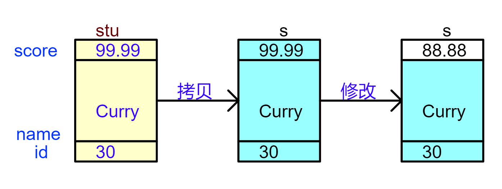
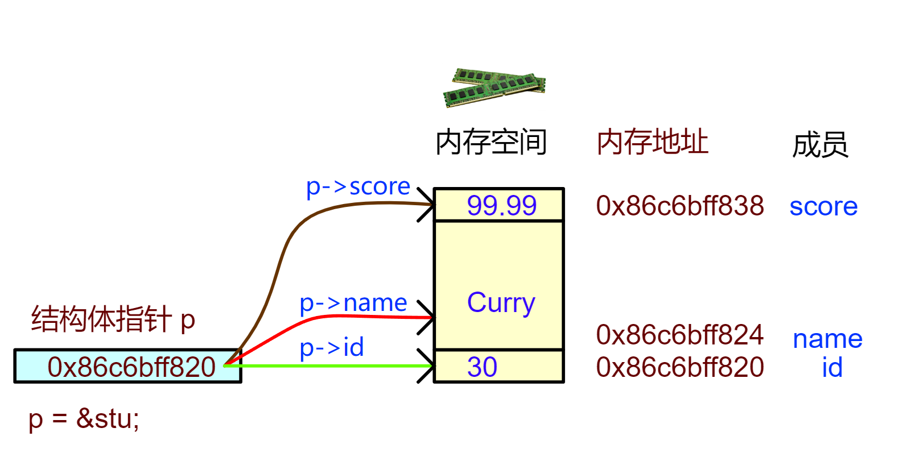

<!DOCTYPE lake>
<h1 data-lake-id="yz35m" id="yz35m"><span data-lake-id="udfc9d8d0" id="udfc9d8d0">0&gt; 功能需求</span></h1><p data-lake-id="u00afd0c0" id="u00afd0c0"><span data-lake-id="u9ea2cda0" id="u9ea2cda0">实现一个函数，能够修改学生的成绩(score)；</span></p><p data-lake-id="u0b9ad5a6" id="u0b9ad5a6"></p><span class="yuque-card-unsupported">[codeblock]</span><hr/><h1 data-lake-id="NAdUB" id="NAdUB"><span data-lake-id="ufa356099" id="ufa356099">1&gt; 方案1： 传值调用</span></h1><span class="yuque-card-unsupported">[codeblock]</span><span class="yuque-card-unsupported">[codeblock]</span><p data-lake-id="u1e6df5fa" id="u1e6df5fa"></p><p data-lake-id="u525689e6" id="u525689e6"><span data-lake-id="ua0aed036" id="ua0aed036">❓</span><span data-lake-id="u8f26def5" id="u8f26def5">问题：</span></p><p data-lake-id="u7eaff7ce" id="u7eaff7ce"><span data-lake-id="uf0d827e0" id="uf0d827e0">1️⃣</span><span data-lake-id="u34b27528" id="u34b27528">修改无效，因为函数内操作的是结构体的副本</span><code data-lake-id="u98dbf2f4" id="u98dbf2f4"><span data-lake-id="u261decb2" id="u261decb2" style="color: #DF2A3F">s</span></code><span data-lake-id="ue16f0ba9" id="ue16f0ba9">， 并不是</span><code data-lake-id="u52dfdd5a" id="u52dfdd5a"><span data-lake-id="u72fe50f9" id="u72fe50f9">stu</span></code><span data-lake-id="u06efe1c2" id="u06efe1c2">；</span></p><p data-lake-id="ubf25ede5" id="ubf25ede5"><span data-lake-id="u00ba0c4e" id="u00ba0c4e">2️⃣</span><span data-lake-id="udb1096cb" id="udb1096cb">内存开销大，传参传整个结构体28字节，效率低；</span></p><hr/><h1 data-lake-id="ueNOO" id="ueNOO"><span data-lake-id="u9cd45f8e" id="u9cd45f8e">2&gt; 方案2：传指针调用</span></h1><span class="yuque-card-unsupported">[codeblock]</span><span class="yuque-card-unsupported">[codeblock]</span><p data-lake-id="u0459fcae" id="u0459fcae"></p><p data-lake-id="u7e1fe499" id="u7e1fe499"><span data-lake-id="ub797bb3e" id="ub797bb3e">完美解决了，传值调用的问题！</span></p><p data-lake-id="u71acdc6a" id="u71acdc6a"><span data-lake-id="u3eeb38bf" id="u3eeb38bf">1️⃣</span><span data-lake-id="uacd24f00" id="uacd24f00">使用指针作为函数参数可以直接修改原结构体，而不是副本；</span></p><p data-lake-id="u7c61ae72" id="u7c61ae72"><span data-lake-id="ud365b792" id="ud365b792">2️⃣</span><span data-lake-id="u0675c356" id="u0675c356">结构体作为参数传递时，只传结构体的地址8个字节，比传整个结构体更高效；</span></p><hr/><h1 data-lake-id="nNerv" id="nNerv"><span data-lake-id="u5ebfe085" id="u5ebfe085">🐻</span><span data-lake-id="ud9bde596" id="ud9bde596">实践练习：</span></h1><p data-lake-id="u3aa6a7a1" id="u3aa6a7a1"><span data-lake-id="u6fcef1ba" id="u6fcef1ba">员工信息管理（结构体指针实践）， 完成下面3个要求：</span></p><p data-lake-id="u5a513801" id="u5a513801"><span data-lake-id="uf4bf3aca" id="uf4bf3aca">1&gt; 定义结构体，存储员工信息：</span></p><table class="lake-table" data-lake-id="LfS86" id="LfS86" margin="true" style="width: 342px"><colgroup><col width="153"/><col width="189"/></colgroup><tbody><tr data-lake-id="u8742daa4" id="u8742daa4" style="height: 36px"><td colspan="2" data-lake-id="u344c7e9b" id="u344c7e9b"><p data-lake-id="u50fb5b81" id="u50fb5b81" style="text-align: center"><span data-lake-id="u386a10c3" id="u386a10c3">员工信息</span></p></td></tr><tr data-lake-id="uf2a0fae6" id="uf2a0fae6"><td data-lake-id="u8026193d" id="u8026193d" style="background-color: #81BBF8"><p data-lake-id="ue2034584" id="ue2034584"><span data-lake-id="ueae76aa5" id="ueae76aa5">工号（id）</span></p></td><td data-lake-id="uaec73bf5" id="uaec73bf5"><p data-lake-id="u9920f6f9" id="u9920f6f9"><span data-lake-id="u0365ae3c" id="u0365ae3c">23</span></p></td></tr><tr data-lake-id="ubca22718" id="ubca22718" style="height: 36px"><td data-lake-id="u609e8329" id="u609e8329" style="background-color: #81BBF8"><p data-lake-id="u54bcde06" id="u54bcde06"><span data-lake-id="uc0a45d5c" id="uc0a45d5c">姓名（name）</span></p></td><td data-lake-id="ua11fec93" id="ua11fec93"><p data-lake-id="u965c38e1" id="u965c38e1"><span data-lake-id="u30d4ae46" id="u30d4ae46">Jordan</span></p></td></tr><tr data-lake-id="u2b26c791" id="u2b26c791" style="height: 36px"><td data-lake-id="ube277938" id="ube277938" style="background-color: #81BBF8"><p data-lake-id="u326c7080" id="u326c7080"><span data-lake-id="uaeb8e2e9" id="uaeb8e2e9">工龄（service）</span></p></td><td data-lake-id="u454c08ae" id="u454c08ae"><p data-lake-id="u31737a99" id="u31737a99"><span data-lake-id="u488b8164" id="u488b8164">5</span></p></td></tr><tr data-lake-id="u3bac3956" id="u3bac3956"><td data-lake-id="ua40c87e9" id="ua40c87e9" style="background-color: #81BBF8"><p data-lake-id="ubf412fac" id="ubf412fac"><span data-lake-id="u099effff" id="u099effff">工资（salary）</span></p></td><td data-lake-id="u05055084" id="u05055084"><p data-lake-id="u2444dbf5" id="u2444dbf5"><span data-lake-id="ubf8cc32f" id="ubf8cc32f">288888.88</span></p></td></tr></tbody></table><p data-lake-id="ufb26d507" id="ufb26d507"><span data-lake-id="u5fc25f48" id="u5fc25f48">2&gt; 函数实现：</span></p><span class="yuque-card-unsupported">[codeblock]</span><p data-lake-id="uaad5f720" id="uaad5f720"><span data-lake-id="ue21a26f0" id="ue21a26f0">3&gt; 画出内存布局图（关键点）：</span></p>